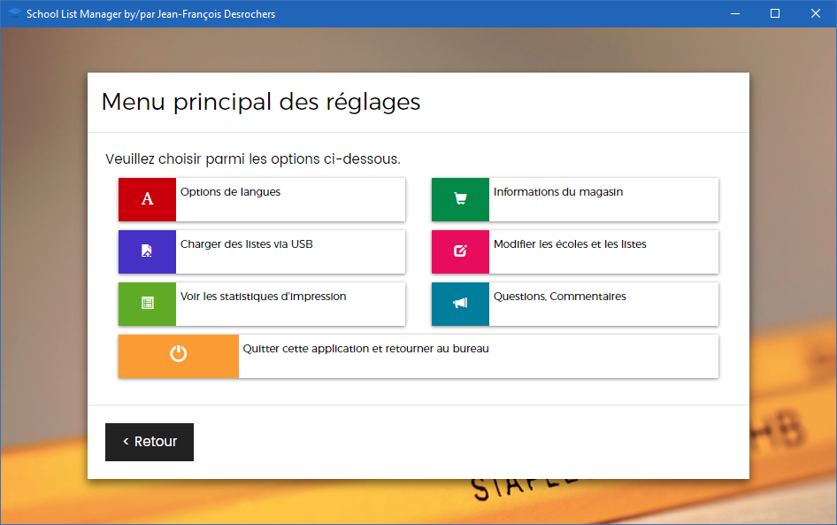
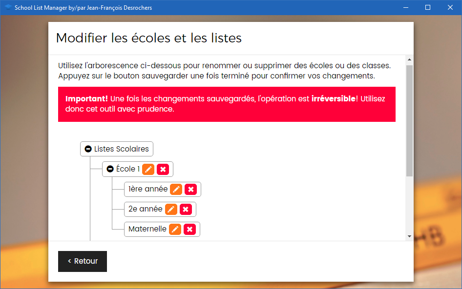
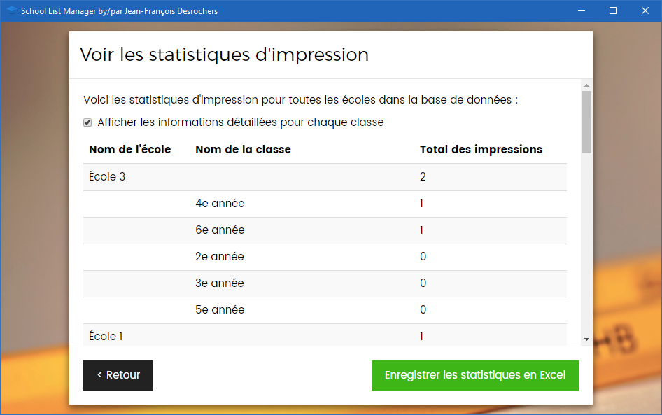

Réglages et plus encore!¶
Accéder au menu des réglages¶
Pour accéder au menu des réglages, double-cliquez sur le logo Bureau en Gros situé en bas à gauche de l'écran d'accueil.
Vous devrez entrer un code d'accès. Le code accès est composé de votre numéro de succursale précédé de '0' pour faire 4 chiffres. Par exemple, comme nous avons entré 999 comme numéro de succursale dans la configuration, notre code d'accès serait 0999. Si votre succursale est 40, votre code sera 0040 et ainsi de suite...

Vous serez ensuite transporté au menu des réglages :

Certains réglages, notamment, Options de langues, Informations du magasin et Charger des listes via USB répètent simplement des étapes du la congfiguration initiale. Ici, nous allons couvrir les trois autres options.
Modifier les écoles et les listes¶
Comme le reste de ce programme, cet écran s'explique de lui-même. Vous cliquez sur les + à gauche des noms d'école pour afficher les classes. Les icônes de crayon permettent de renommer une école ou une liste et les icônes de x permettent de supprimer une école ou une liste. Aucune de ces opérations n'est permanente avant que vous cliquiez sur Sauvegarder alors si par exemple vous supprimez la mauvaise classe vous pouvez faire < Retour et revenir supprimer la bonne.
Danger
Comme c'est noté dans le programme, une fois sauvegardés les changements sont permanents. Ce qui veut dire que vous perdrez les statistiques liées à l'école ou la liste supprimée et que vous devrez les réimporter pour les récupérer.

Voir les statistiques d'impression¶
Voici un outil très utile pour vos activités de résautage avec les écoles: les statistiques d'utilisation. Dans ce menu, vous pourrez voir quelles sont les écoles dont les parent magasinent chez vous en traquant le nombre d'impression de listes :

Vous pouvez également le voir par classe :

Et vous pouvez même enregistrer le tout en format Microsoft Excel pour en faire votre propre analyse!
Questions et commentaires¶
Si vous avez des problèmes à utiliser le programme, des questions à me poser, des commentaires à m'offrir ou des suggestions de fonctionnalités à ajouter, cette fonction vous permet de le faire. Non seulement je sera notifié instantanément, mais vous recevrez un lien vous permettra de suivre vos commentaires et vos demandes vers leur accomplissement!

N'hésitez-pas à l'utiliser! Cela complète ce guide. Je vous souhaite bien du plaisir avec ce programme et une bonne rentrée scolaire!